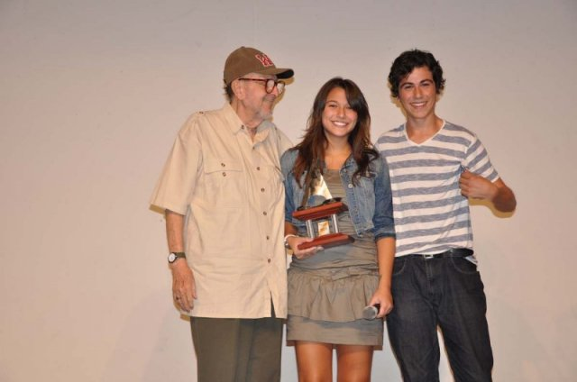

ANTES QUE O MUNDO ACABE é o Melhor Filme também em Anápolis
ANTES QUE O MUNDO ACABE, longa de estreia da diretora Ana Luiza Azevedo, produzido pela Casa de Cinema de Porto Alegre e distribuído pela Imagem Filmes, acaba de ganhar mais 4 prêmios, chegando a um total de 17 premiações até agora.
Mais importante do que isso: ANTES QUE O MUNDO ACABE recebeu o prêmio de Melhor Filme no 1º Anápolis Festival de Cinema, realizado naquela cidade goiana de 12 a 18 de abril. Portanto, o júri de Anápolis concordou com a crítica de Paulínia (2009), com os responsáveis pelo Prêmio Itamaraty na Mostra de São Paulo (2009), com os júris do Divercine de Montevidéu (2010) e do Festival de Chemnitz (Alemanha, 2010), além da Associação Paulista de Críticos de Arte (2010), que também escolheram ANTES QUE O MUNDO ACABE como melhor filme em suas respectivas competições.
Em Anápolis, o prêmio de Mehor Roteiro também foi para ANTES QUE O MUNDO ACABE, pelo adaptação que Ana Luiza Azevedo, Paulo Halm, Jorge Furtado e Giba Assis Brasil realizaram a partir da obra original de Marcelo Carneiro da Cunha. Pedro Tergolina recebeu um Prêmio Especial do Júri pela interpretação do protagonista do filme, Daniel, um menino de 15 anos numa cidade do interior onde tudo parece que vai acabar. E Murilo Grossi, pela sua notável criação de Antônio, o padrasto de Daniel, mereceu o prêmio de Melhor Ator Coadjuvante.
Os prêmios foram recebidos pelos atores Eduardo Cardoso e Bianca Menti, em nome da equipe e elenco de ANTES QUE O MUNDO ACABE. A diretora Ana Luiza Azevedo, que também esteve em Anápolis para a exibição do filme, teve que voltar a Porto Alegre antes da cerimônia de premiação.
O júri do 1º Anápolis Festival de Cinema foi formado pelos cinestas João Batista de Andrade e Armando Bulcão, a produtora e atriz Mallú Moraes, a atriz Neusa Borges e o diplomata e escritor Lauro Barbosa Moreira.
Mais informações no sítio oficial do Festival de Anápolis ou no blog do curador da mostra, Rubens Ewald Filho.
Eduardo Cardoso, Pedro Tergolina e Bianca Menti: 17 prêmios para ANTES QUE O MUNDO ACABE, sendo 6 deles de "Melhor Filme".

Bianca Menti e Eduardo Cardoso recebem o troféu de Melhor Filme em Anápolis.
{kind=link}
{kind=link}